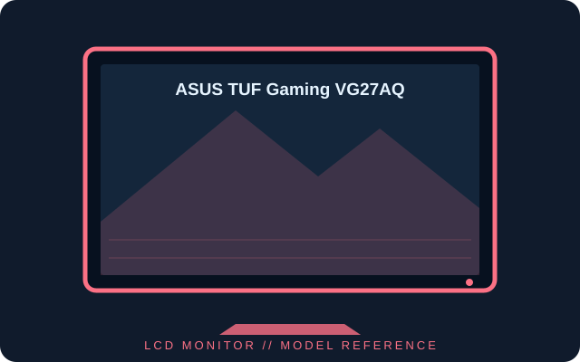

[ INDIVIDUAL COMPONENT // DISPLAYS ]
ASUS TUF Gaming VG27AQ
27-inch WQHD IPS gaming monitor with a 144 Hz standard ceiling and a documented 165 Hz overclocked mode.

IDENTIFICATION: Confirm the complete model and regional suffix on the rear label. Published figures describe the cited family/configuration; the exact manual and unit label take precedence where revisions differ.
Specifications
| Catalog subcategory | LCD displays |
|---|---|
| Exact product / family | ASUS TUF Gaming VG27AQ |
| Panel and native resolution | 27-inch IPS LCD, 2560 × 1440 (16:9) |
| Native timing | Up to 144 Hz standard; up to 165 Hz overclocked via DisplayPort, subject to GPU and timing support |
| Luminance / contrast | 350 cd/m² typical; 1000:1 typical |
| Inputs / companion ports | DisplayPort 1.2, HDMI 2.0 × 2, 3.5 mm headphone output and built-in speakers |
| Stand / VESA mounting | Height, tilt, swivel and pivot adjustments; 100 × 100 mm VESA mount |
Power and compatibility notes
Uses the supplied external AC adapter; power draw depends on brightness, audio and refresh mode. The 165 Hz setting is an overclock and requires DisplayPort plus a compatible graphics output; HDMI timing limits differ. Verify the exact suffix and manual before replacement.
Preservation notes
Record the complete rear-label model, serial/date code, supplied stand and accessories, tested input, host graphics output, cable, selected timing and image condition. Preserve the matching regional manual and calibration profile with the unit; use qualified service procedures for internal work.
Manufacturer documentation and sources
- ASUS — VG27AQ technical specificationsManufacturer specification page with timing and connectivity information.
- ASUS — VG27AQ support and manualsOfficial user guides and documentation for the model.